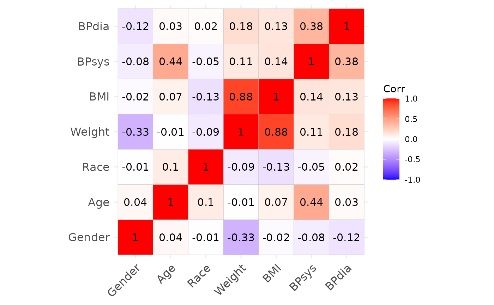

simdata: NORTA based simulation designs
Michael Kammer
2023-08-30
Source:vignettes/NORTA_demo.Rmd
NORTA_demo.RmdIntroduction
This document describes the workflow to define NORmal-To-Anything
(NORTA) based simulation designs using the simdata package.
The method is very useful to re-create existing datasets through a
parametric approximation for usage in simulation studies. It is also
quite easy to use, and allows the definition of presets for sharing
simulation setups. General details of the methodology and further
references are given in e.g. Cario and Nelson
(1997) and Ghosh and Henderson
(2003).
In this vignette we will prefix all relevant function calls by
:: to show the package which implements the function - this
is not necessary but only done for demonstration purposes.
Outline of NORTA
The goal of the NORTA procedure is to produce identically independently distributed (iid) samples from random variables with a given correlation structure (Pearson correlation matrix) and given marginal distributions, thereby e.g. approximating existing datasets.
Following Ghosh and Henderson (2003), we want to sample iid replicates of the random vector \(X = (X_1, X_2, \ldots, X_k)\). Denote by \(F_i(s) = P(X_i \leq s)\) the distribution functions (i.e. the marginal distributions) of the components of \(X\), and by \(\Sigma_X\) the \(k \times k\) correlation matrix of \(X\). Then NORTA proceeds as follows:
- Generate multivariate standard normal random vectors (i.e mean 0, variance 1) \(Z = (Z_1, Z_2, \ldots, Z_k)\) with a correlation matrix \(\Sigma_Z\).
- Compute the random vector \(X\) via \(X_i := F_i^{-1}(\Phi(Z_i))\), where \(\Phi\) denotes the distribution function of the standard normal distribution, and \(F_i^{-1}(t) := \inf\{x: F_i(x) \geq t\}\) is the quantile function of \(X_i\).
The resulting vector \(X\) then has
the desired marginal distribution. To obtain the target correlation
structure \(\Sigma_X\), the correlation
matrix \(\Sigma_Z\) for the first step
has to be chosen appropriately. This can be achieved via solving
univariable optimisation problems for each pair of variables \(X_i\) and \(X_j\) in \(X\) and is part of the simdata
package.
Caveats of NORTA
The NORTA procedure has some known limitations, which may lead to
discrepancies between the target correlation structure and the
correlation structure obtained from the sampling process. These are,
however, partly alleviated when using existing datasets as templates, or
by special techniques within simdata.
- Not all combinations of given marginal distributions and target correlation are feasible by the nature of the variables. This is not an issue when an existing dataset is used as template, since that demonstrates that the combination exists.
- The optimisation procedure to obtain \(\Sigma_Z\) may lead to a matrix which is
not positive definite (since the optimisation is only done for pairs of
variables), and therefore not a proper correlation matrix. To alleviate
this, the
simdatapackage ensures positive definiteness by using the closest positive definite matrix instead. This may lead to discrepancies between the target correlation and the achieved correlation structure. - NORTA cannot reproduce non-linear relationships between variables.
- The optimisation procedure to obtain \(\Sigma_Z\) may take a while to compute when the number of variables increases. This is alleviated through the fact that this computation has to be done only a single time, during definition of the simulation design. All further simulation iterations only use the optimisation result and are therefore not subject to this issue.
- When applied to an existing dataset, NORTA relies on the estimation of the target correlation matrix and marginal distributions. More complex data (e.g. special marginal distributions, complex correlation structure) therefore requires more observations for an accurate representation.
Comparison to other methods
NORTA is well suited to re-create existing datasets through an
explicit parametric approximation. Similar methods exist, that achieve
this through other means. A particularly interesting alternative is the
generation of synthetic datasets using an approach closely related to
multiple imputation, and is implemented in e.g. the
synthpop R package (Nowok, Raab, and
Dibben (2016)). Its’ primary aim is to achieve confidentiality by
re-creating copies to be shared for existing, sensitive datasets.
In comparison, synthpop potentially offers more flexible
data generation than NORTA, thereby leading to a better approximation of
an original dataset. However, synthpop is also more opaque
than the explicit, user defined specification of correlation and
marginal distributions of NORTA. This also entails that
synthpop can be generally used more like a black-box
approach, which requires little user input, but is also less transparent
than the manual curation of the simulation setup in NORTA. Furthermore,
NORTA allows easy changes to the design to obtain a wide variety of
study designs from a single template dataset, whereas
synthpop is more targeted at re-creating the original
dataset. Both methods therefore have their distinct usecases and
complement each other.
Workflow in simdata
Given the outline of the method, all the user has to specify to define a NORTA design on \(k\) variables are
- A \(k \times k\) target correlation matrix
- The \(k\) marginal distributions for each variable, given as quantile functions
These can be estimated from existing datasets of interest, circumventing some limitations of the NORTA approach. See the example below for the setup within this package.
Some common distributions
The required marginal distributions are given as quantile functions.
R provides implementations of many standard distributions which can be
directly used, see the help on distributions. The quantile
functions use the prefix “q”, as in e.g. qnorm or
qbinom. Further implementations can be found in the
packages extraDistr, actuar and many others
(see https://cran.r-project.org/web/views/Distributions.html).
Example
In this example we will setup a NORTA based simulation design for a
dataset extracted from the National Health And Nutrition Examination
Survey (NHANES), accessible in R via several packages (we use the
nhanesA package in this demo).
Load dataset
First we will load the dataset and extract several variables of interest, namely gender (‘Gender’), age (‘Age’), race (‘Race’), weight (‘Weight’), bmi (‘BMI’), systolic (‘BPsys’) and diastolic blood pressure (‘BPdia’). These variabes demonstrate several different kinds of distributions. For a detailed description of the data, please see the documentation at https://www.cdc.gov/nchs/nhanes.htm. Here we are not concerned with the exact codings of the variables, so we will not add labels to factor variables.
df = nhanesA::nhanes("DEMO_J") %>%
left_join(nhanesA::nhanes("BMX_J")) %>%
left_join(nhanesA::nhanes("BPX_J")) %>%
dplyr::select(Gender = RIAGENDR,
Age = RIDAGEYR,
Race = RIDRETH1,
Weight = BMXWT,
BMI = BMXBMI,
BPsys = BPXSY1,
BPdia = BPXDI1) %>%
filter(complete.cases(.)) %>%
filter(Age > 18)
print(head(df))## Gender Age Race Weight BMI BPsys BPdia
## 1 2 75 4 88.8 38.9 120 66
## 2 1 56 5 62.1 21.3 108 68
## 3 1 67 3 74.9 23.5 104 70
## 4 1 71 5 65.6 22.5 112 60
## 5 1 61 5 77.7 30.7 120 72
## 6 1 22 3 74.4 24.5 116 62Estimate target correlation
Using this dataset, we first define the target correlation
cor_target and plot it.
cor_target = cor(df)
ggcorrplot::ggcorrplot(cor_target, lab = TRUE)
Define marginal distributions
Further, we define a list of marginal distributions dist
representing the individual variables. Each entry of the list must be a
function in one argument, defining the quantile function of the
variable. The order of the entries must correspond to the order in the
target correlation cor_target.
We also use the fitdistrplus::fitdist function to find
appropriate distribution candidates and fit their parameters. Decisions
regarding the fit of a distribution can be made using e.g. the Akaike
information criterion (AIC) or Bayesian information criterion (BIC)
displayed by the summary of the fit object returned by the function (the
lower their values, the better the fit).
In case a parametric distribution doesn’t fit very well, we instead make use of a density estimate and use this to define the marginal quantile function.
- Gender: a binomial distribution with \(P(2) \approx 0.5\).
- Age: the distribution is not very “nice”.
- We approximate it using a kernel density estimate using the
stats::densityfunction. - Note that the boundaries of the distribution can be more or less
smoothed with the
cutparameter. - To obtain a quantile function, first we integrate the density,
normalize it, and then use
stats::approxfunto derive a univariable quantile function.
- We approximate it using a kernel density estimate using the
- Race: a categorical distribution with 5 categories specified by
probabilities
- Can also be implemented using the categorical distribution from the
package
LaplacesDemonimplemented viaqcat
- Can also be implemented using the categorical distribution from the
package
- Weight: gamma distribution parameters estimated using
fitdistrplus::fitdist - BMI and systolic blood pressure: log-normal distribution parameters
estimated using
fitdistrplus::fitdist - Diastolic blood pressure: normal distribution parameters estimated
using
fitdistrplus::fitdistafter removing zero values from the data
The code to implement these marginal distributions is shown below. Helper functions to ease the workflow will be implemented in future versions of the package.
dist = list()
# gender
dist[["Gender"]] = function(x) qbinom(x, size = 1, prob = 0.5)
# age
dens = density(df$Age, cut = 1) # cut defines how to deal with boundaries
# integrate
int_dens = cbind(Age = dens$x, cdf = cumsum(dens$y))
# normalize to obtain cumulative distribution function
int_dens[, "cdf"] = int_dens[, "cdf"] / max(int_dens[, "cdf"])
# derive quantile function
# outside the defined domain retun minimum and maximum age, respectively
dist[["Age"]] = approxfun(int_dens[, "cdf"], int_dens[, "Age"],
yleft = min(int_dens[, "Age"]),
yright = max(int_dens[, "Age"]))
# race
dist[["Race"]] = function(x)
cut(x, breaks = c(0, 0.135, 0.227, 0.575, 0.806, 1),
labels = 1:5)
# weight
fit = fitdistrplus::fitdist(as.numeric(df$Weight), "gamma")
summary(fit)
dist[["Weight"]] = function(x) qgamma(x, shape = 14.44, rate = 0.17)
# bmi
fit = fitdistrplus::fitdist(as.numeric(df$BMI), "lnorm")
summary(fit)
dist[["BMI"]] = function(x) qlnorm(x, meanlog = 3.36, sdlog = 0.23)
# systolic blood pressure
fit = fitdistrplus::fitdist(as.numeric(df$BPsys), "lnorm")
summary(fit)
dist[["BPsys"]] = function(x) qlnorm(x, meanlog = 4.83, sdlog = 0.15)
# diastolic blood pressure
fit = fitdistrplus::fitdist(as.numeric(df %>%
filter(BPdia > 0) %>%
pull(BPdia)), "norm")
summary(fit)
dist[["BPdia"]] = function(x) qnorm(x, mean = 72.42, sd = 11.95)Simulate data
Now we can use the simdata::simdesign_norta to obtain a
design using these specification. After that, we simulate a dataset of
the same size as the original data set using
simdata::simulate_data, and compare the resulting summary
statistics and correlation structures.
dsgn = simdata::simdesign_norta(cor_target_final = cor_target, dist = dist,
transform_initial = data.frame,
names_final = names(dist), seed_initial = 1)
simdf = simdata::simulate_data(dsgn, nrow(df), seed = 2)Results
Summary statistics of the original and simulated datasets.
summary(df)## Gender Age Race Weight
## Min. :1.000 Min. :19.00 Min. :1.000 Min. : 36.20
## 1st Qu.:1.000 1st Qu.:34.00 1st Qu.:3.000 1st Qu.: 66.90
## Median :2.000 Median :52.00 Median :3.000 Median : 79.00
## Mean :1.511 Mean :50.29 Mean :3.257 Mean : 82.68
## 3rd Qu.:2.000 3rd Qu.:65.00 3rd Qu.:4.000 3rd Qu.: 94.70
## Max. :2.000 Max. :80.00 Max. :5.000 Max. :219.60
## BMI BPsys BPdia
## Min. :14.80 Min. : 72.0 Min. : 0.00
## 1st Qu.:24.70 1st Qu.:112.0 1st Qu.: 64.00
## Median :28.50 Median :124.0 Median : 72.00
## Mean :29.69 Mean :126.2 Mean : 71.85
## 3rd Qu.:33.50 3rd Qu.:136.0 3rd Qu.: 80.00
## Max. :84.40 Max. :224.0 Max. :124.00
summary(simdf)## Gender Age Race Weight
## Min. :0.0000 Min. :16.00 Min. :1.000 Min. : 26.18
## 1st Qu.:0.0000 1st Qu.:34.04 1st Qu.:3.000 1st Qu.: 68.51
## Median :1.0000 Median :50.74 Median :3.000 Median : 82.24
## Mean :0.5107 Mean :49.91 Mean :3.263 Mean : 84.66
## 3rd Qu.:1.0000 3rd Qu.:64.67 3rd Qu.:4.000 3rd Qu.: 98.63
## Max. :1.0000 Max. :82.89 Max. :5.000 Max. :206.00
## BMI BPsys BPdia
## Min. :12.44 Min. : 64.69 Min. : 28.25
## 1st Qu.:24.48 1st Qu.:113.66 1st Qu.: 64.33
## Median :28.55 Median :125.28 Median : 72.42
## Mean :29.50 Mean :127.05 Mean : 72.47
## 3rd Qu.:33.61 3rd Qu.:138.92 3rd Qu.: 80.65
## Max. :64.72 Max. :204.22 Max. :117.18Correlation structures of the original and simulated datasets.
We may also inspect the continuous variables regarding their univariate and bivariate distributions. The original data is shown in black, the simulated data is shown in red.
From this we can observe, that the agreement between the original data and the simulated data is generally quite good. Note, however, that e.g. the slightly non-linear relationship between age and diastolic blood pressure cannot be fully captured by the approach, as expected. Furthermore, the original data shows some outliers, which are also not reproducible due to the parametric nature of the NORTA procedure.
R session information
## R version 4.3.1 (2023-06-16)
## Platform: x86_64-pc-linux-gnu (64-bit)
## Running under: Ubuntu 22.04.3 LTS
##
## Matrix products: default
## BLAS: /usr/lib/x86_64-linux-gnu/openblas-pthread/libblas.so.3
## LAPACK: /usr/lib/x86_64-linux-gnu/openblas-pthread/libopenblasp-r0.3.20.so; LAPACK version 3.10.0
##
## locale:
## [1] LC_CTYPE=C.UTF-8 LC_NUMERIC=C LC_TIME=C.UTF-8
## [4] LC_COLLATE=C.UTF-8 LC_MONETARY=C.UTF-8 LC_MESSAGES=C.UTF-8
## [7] LC_PAPER=C.UTF-8 LC_NAME=C LC_ADDRESS=C
## [10] LC_TELEPHONE=C LC_MEASUREMENT=C.UTF-8 LC_IDENTIFICATION=C
##
## time zone: UTC
## tzcode source: system (glibc)
##
## attached base packages:
## [1] stats graphics grDevices utils datasets methods base
##
## other attached packages:
## [1] ggcorrplot_0.1.4 patchwork_1.1.3 ggplot2_3.4.3
## [4] dplyr_1.1.2 fitdistrplus_1.1-11 survival_3.5-5
## [7] MASS_7.3-60 nhanesA_0.7.4 simdata_0.3.0.9003
##
## loaded via a namespace (and not attached):
## [1] sass_0.4.7 utf8_1.2.3 generics_0.1.3 xml2_1.3.5
## [5] stringi_1.7.12 lattice_0.21-8 digest_0.6.33 magrittr_2.0.3
## [9] evaluate_0.21 grid_4.3.1 mvtnorm_1.2-3 fastmap_1.1.1
## [13] rprojroot_2.0.3 plyr_1.8.8 jsonlite_1.8.7 Matrix_1.5-4.1
## [17] httr_1.4.7 rvest_1.0.3 purrr_1.0.2 fansi_1.0.4
## [21] scales_1.2.1 textshaping_0.3.6 jquerylib_0.1.4 cli_3.6.1
## [25] rlang_1.1.1 munsell_0.5.0 splines_4.3.1 withr_2.5.0
## [29] cachem_1.0.8 yaml_2.3.7 tools_4.3.1 reshape2_1.4.4
## [33] memoise_2.0.1 colorspace_2.1-0 vctrs_0.6.3 R6_2.5.1
## [37] lifecycle_1.0.3 stringr_1.5.0 fs_1.6.3 foreign_0.8-84
## [41] ragg_1.2.5 pkgconfig_2.0.3 desc_1.4.2 gtable_0.3.4
## [45] pkgdown_2.0.7 bslib_0.5.1 pillar_1.9.0 glue_1.6.2
## [49] Rcpp_1.0.11 systemfonts_1.0.4 highr_0.10 xfun_0.40
## [53] tibble_3.2.1 tidyselect_1.2.0 knitr_1.43 farver_2.1.1
## [57] htmltools_0.5.6 labeling_0.4.2 rmarkdown_2.24 compiler_4.3.1